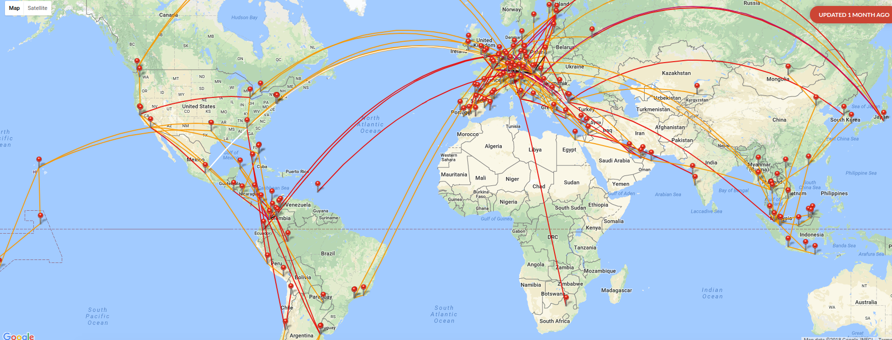

<div class=" background2">
<div class="container  background1">
  <div class="row">
    <div class="col-lg-9 col-sm-8">
      <br>
        <h1 style="text-align: left"><strong></strong>Über Patrick - Meine Geschichte</h1>
        <p style="text-align: left">Wie wird man Experte über Meilen- und Hotelbonusprogramme um diese zu seinem Vorteil zu nutzen? Im folgenden erfährst du wie ich mir dieses Wissen bereits im Studium und später als Unternehmensberater angeeignet habe und was mich bewegt hat den Großteil meines Lebens mit Reisen zu verbringen. So wurde ich Meilenexperte:</p>

        <h2 style="text-align: left"><strong>Reisen aus Leidenschaft</strong></h2>
        <figure class="figure">
          
          <figcaption class="figure-caption">Patrick</figcaption>
        </figure>
        <p>Seit ich während meiner Schulzeit ein Jahr in Kalifornien verbracht habe, gilt meine Passion dem Reisen und dem Kennenlernen fremder Kulturen. Als Student bin ich als Mitglied der Studentenorganisation ESN, die den interkulturellen Austausch fördert, durch ganz Europa gereist und habe Freundschaften in allen europäischen Ländern geschlossen.
        Als es mich dann in die weite Welt hinaus zog, musste ich mich nach einer Möglichkeit umsehen meine Reisen mit dem begrenzten Budget eines Studenten zu finanzieren. Da ich von der Airlinebranche fasziniert war, fing ich an Flugtarife eingehend zu analysieren und war ab sofort die Anlaufstelle für meine Freunde, wenn sie mal wieder günstig in den Urlaub fliegen wollten.
        Letztendlich habe ich dann meine Masterarbeit diesem Thema gewidmet und Preisfehler bei Flugtarifen analysiert. Das führte dazu, dass ich im Alter von 30 Jahren mit mehr als 400 Flügen schon über 1000 Stunden im Flugzeug verbracht und über 70 Länder bereist habe.</p>
        <h2><strong>Meilenexperte</strong></h2>
        <p>Durch meine vielen Reisen fing ich auch an nebenbei Meilen zu sammeln. Ich war sofort von der Komplexität dieser Programme fasziniert und schätzte deren großartige Chancen, wie die Vorteile eines Vielfliegerstatus oder günstige Upgrademöglichkeiten in die Business Class. Fortan habe ich jede freie Minute außerhalb (und oft auch innerhalb) des Hörsaals mit der Analyse der Meilenprogramme verbracht.</p>
        <figure>
          <a href="https://my.flightradar24.com/Daoane17"></a><br>        
        </figure>
        <figure>
          
        </figure>
        <h2><strong>Meilen, Punkte &amp; mehr - wieso das ganze?</strong></h2>
        <p>Doch irgendwann neigte sich das Studium dem Ende zu und ich fing an als Unternehmensberater zu arbeiten, womit eine immense Reisetätigkeit einherging. Dabei kam mir mein Wissen über Meilenprogramme natürlich zu Gute. Ich stellte jedoch fest, dass meine Kollegen die auch wöchentlich im Flugzeug saßen oftmals keinen blassen Schimmer hatten, wie sie optimal Meilen sammeln und wieder einlösen könnten. Auch viele meiner Studienfreunde fingen an zu arbeiten und flogen für Ihre Arbeitgeber um die Welt - doch auch sie waren von diesen ominösen Meilenprogrammen überfordert.
        Da ich wusste, dass viele Geschäfts- und Privatreisende vor ähnlichen Schwierigkeiten standen habe ich Meilen, Punkte und mehr gegründet. Mit <strong><a href="https://www.youtube.com/channel/UCHcBFsnpfWV5QEVsc5t4_hw" target="_blank" rel="noopener noreferrer">meinen Youtube Videos</a></strong> möchte ich Vielfliegern helfen endlich eine sinnvolle Meilenstrategie zu entwickeln. Darüber hinaus biete ich eine<strong> <a href="http://www.meilenpunkteundmehr.de/meilenberatung/" target="_blank" rel="noopener noreferrer">individuelle Meilenberatung</a></strong> an um gezielt die Sammel- und Einlösestrategie meiner Kunden zu optimieren und helfe ihnen so tausende Euro zu sparen.</p>
    </div>
    <app-right-bar class="col-lg-3 col-sm-4 background1"></app-right-bar>
  </div>
</div>
</div>